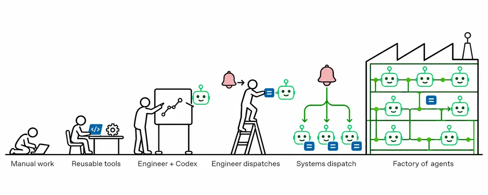
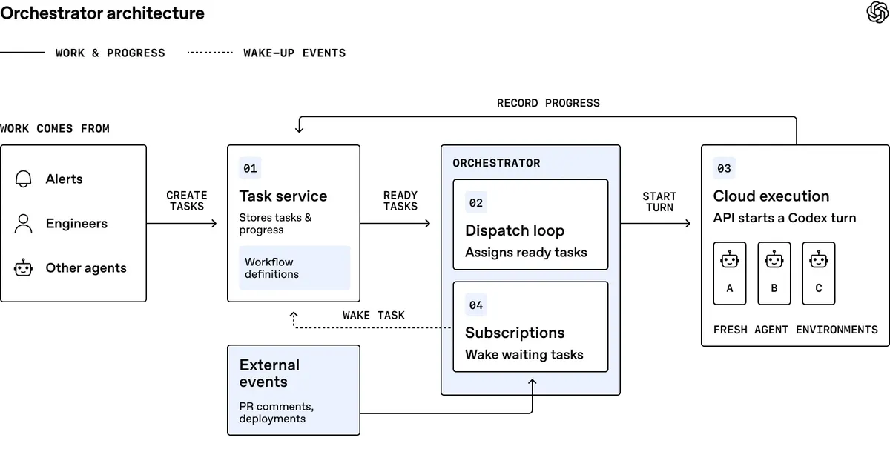

效能工廠：任務帶狀態接力，人守合併與取捨
導讀原文：How OpenAI’s Performance Factory keeps ChatGPT fast（OpenAI 官方部落格，工程方法記述，作者 Okay Zed 與 Cyrus Forbes，Members of Technical Staff）
Performance Factory 是 OpenAI 在雲端跑的自動化效能工程系統：警示一響，任務帶著狀態在代理與工程師之間流動；哪一步要人，寫在 Markdown 設定裡。
演進：調查先寫成 skill，才搬得上雲端
Codex 之前，工程師手動看指標與日誌、比對 trace、進機器除錯、讀程式碼，長期累積出 30 多個效能工具。
原文開場就說：代理式開發的速度，讓傳統效能工程作法撐不下去。

把 Codex 當夥伴後，工程師可以直接問「這裡為什麼變慢」，連不熟的系統也能一起查。
關鍵一步是把查法寫成共用 skill：perf-forensics 講明有哪些工具、何時該用、一次調查怎麼走完。
它要求先答三題：退化何時開始、哪些請求受影響、部署或設定變更能否解釋。
skill 不是一次寫定。團隊用過去的退化案例做 evals，反覆測、反覆修。
再下一步是把調查搬上雲端，讓警示自己開一個 Codex session。
但警示一多，連「哪幾件該看」都得翻 Slack 討論串；工廠就是為了收掉這段人工分診。
四個零件：存狀態、派工、執行、喚醒
工程師用 Markdown 寫工作流：任務有哪些狀態、允許哪些轉移、哪幾步必須由人做，再附上給代理的指示。
派送迴圈定期檢查哪些任務已就緒，用正確的指示啟動一次 Codex turn。

雲端那層是內部 API：Codex 跑在 OpenAI 網路內的環境，碰得到 repo，也碰得到觀測工具。
工具清單是 metrics、logs、trace、CPU profile 與記憶體快照；代理以 service identity 執行，權限可縮限。
訂閱則在外部事件發生時喚醒任務，例如 GitHub 上出現審查留言，或某次部署完成。
（編輯觀點：service identity 這條最容易被略過，但它決定代理的動作在觀測系統裡能不能被歸屬。）
接力與把關：代理跑四步，人守合併
第一個工作流 Regression Workflow 只有四種狀態：待調查、已定位根因、已提修補、已解決。
- 01警示 → 任務服務指標跨過門檻，開一張待調查任務
- 02派送迴圈 → 代理任務就緒，帶指示啟動 Codex turn
- 03代理 → 任務查出根因、記下發現，提出修補
- 03b旁支：對抗式審查另一個 Codex session 試著推翻這份診斷
- 04代理 → PR實作修補並開 pull request，修補同樣要過對抗審查
- 05工程師 → 合併人決定是否合併、部署
- 06代理 → 任務部署後驗收：是否回到基準
- 06b分支：僅部分恢復剩下的變慢另開新任務
- 06c分支：沒有改善送回重新調查
本站重繪，非原文圖；順序與分支取自原文 Regression Workflow 說明（原文圖為 1–6：Detected／Find root cause／Propose fix／Review & deploy／Verify recovery／Resolved；本圖把派工與對抗式審查畫成旁支，編號為本站所加）。
找根因先問三件事：哪些指標變差、何時開始變、哪些請求受影響。
警示只在指標跨門檻時響，退化可能早就開始，所以代理會往回找，並比對不同的請求群。
再去看部署與功能變更，最後讀程式碼，才寫下診斷。
代理有時停在第一個看似合理的解釋，於是另一個 Codex session 專門來推翻它：重檢假設、測反事實。
原文的例子：審查者發現負責找檔案的服務早已恢復，圖片請求卻還在失敗，調查因此重開。
修補比找病因更難。代理的改動有時比需要的複雜，或引進新問題，所以修補也過一輪對抗審查。
有些取捨仍要架構判斷：加一層快取可能變快，卻可能帶來過期資料。
每張任務都附自動產生的報告：退化摘要、影響、根因、建議修補，外加指標時間序列、CPU 火焰圖與 trace。
| 部署後的結果 | 代理的處置 |
|---|---|
| 回到基準 | 任務標為已解決 |
| 只有部分恢復 | 原案收掉，剩下的變慢另開一張任務 |
| 完全沒改善 | 送回重新調查 |
→ 可橫向滑動
人工複核 100 件根因建議：70% 判為準確，30% 需再修正或未完全建立因果（OpenAI 自報，無第三方驗證）。
原文自陳三個教訓。第一，保護工程師的注意力：原始輸出是一整片文字牆，得把相關事件連結、按指標分組、依估計影響排序。
第二，代理的改動要評：調查與摘要分開測，用抽掉答案的過去事件回測，摘要另派一個 grader 打分。
第三，把反覆失敗變成自修：每天一支代理掃近期 run 的工具失敗與權限錯誤，替卡點開任務。
下一步是從一個工作流變多個，讓一個工作流的代理替另一個開任務。
原文只給調查量與根因準確率，沒有成本、延遲或省下多少人力的數字，讀者不宜自行換算。
（編輯推論：門檻不在模型多強，而在任務狀態與權限能否先立起來。）
還有規劃中的主動監控：用更細的效能數據抓警示漏掉的退化，例如某種請求 CPU 悄悄上升就開任務追。
帶走三件事
狀態要活在代理之外。任務自己帶狀態與發現，換 session、換人都接得上。
診斷要有人反對。同一個 session 不會推翻自己，100 件裡 30 件要修。
人的位置在取捨。合併、快取這類代價，原文仍留給工程師。
同一主題的其他館藏
導讀為本站編輯內容（AI 摘解自原文與館藏重點，非官方文件）；引述數據出自原文，圖解與小標為編輯整理。文中 1,700+ 次、600+ 件、17 次／天、70% 皆為 OpenAI 自報、無第三方驗證；圖解 A 為本站重繪。數據與敘述已對照原文查核，若有出入以官方原文為準。